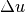
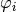
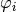
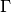

The model object¶
The aim of the model object, defined in file getfem/getfem_models.h, is to globally describe a PDE model. It mainly contains two lists: a list of variables (related or not to the mesh_fem objects) and data (also related or not to the mesh_fem objects) and a list of bricks. The role of the model object is to coordinate the module and make them produce a linear system of equations. If the model is linear, this will simply be the linear system of equation on the corresponding dofs. If the model is nonlinear, this will be the tangent linear system. There are two versions of the model object: a real one and complex one.
The declaration of a model object is done by:
getfem::model md(complex_version = false);
The parameter of the constructor is a boolean which determines whether the model deals with complex number or real numbers. The default is false for a model dealing with real numbers.
The (tangent) linear system
There are different kinds of variables/data in the model. The variables are the
unknown of the model. They will be (generally) computed by solving the (tangent)
linear system built by the model. Generally, the model will have several
variables. Each variable has a certain size (number of degrees of freedom) and the
different variables are sorted in alphanumeric order to form the global unknown
( in Fig. The (tangent) linear system). Each variable will be associated to an
interval which will represent the degrees of freedom
indices corresponding to this variable in the global system. The model stores also
some data (in the same format as the variables). The difference between data
and variables is that data is not an unknown of the model. The value of the
data should be provided. In some cases (nonlinear models) some variables can be
considered as some data for certain terms. Variables and data are of two kinds.
They can have a fixed size, or they can depend on a finite element method (be the
d.o.f. of a finite element method).
in Fig. The (tangent) linear system). Each variable will be associated to an
interval which will represent the degrees of freedom
indices corresponding to this variable in the global system. The model stores also
some data (in the same format as the variables). The difference between data
and variables is that data is not an unknown of the model. The value of the
data should be provided. In some cases (nonlinear models) some variables can be
considered as some data for certain terms. Variables and data are of two kinds.
They can have a fixed size, or they can depend on a finite element method (be the
d.o.f. of a finite element method).
For instance, in the situation described in Fig. The (tangent) linear system, there are four variables in the model, namely and . The role of the model object will be to assemble the linear system, i.e. to fill the sub matrices corresponding to each variable (, and ) and the coupling terms between two variables (). This different contributions will be given by the different bricks added to the model.
The main useful methods on a model object are
- m.is_complex()¶
A boolean which says if the model deals with real or complex unknowns and data.
- add_fixed_size_variable(name, size, niter=1)¶
Add a variable of fixed size. name is a string which designate the variable. niter is the number of copy of the variable.
- add_fixed_size_variable(name, sizes, niter=1)
Add a variable of fixed size. name is a string which designate the variable. sizes is a vector of dimension for matrix or tensor fixed size variables. niter is the number of copy of the variable.
- add_fixed_size_data(name, size, niter=1)¶
Add a data of fixed size. name is a string which designate the data. niter is the number of copy of the data.
- add_fixed_size_data(name, sizes, niter=1)
Add a data of fixed size. name is a string which designate the data. sizes is a vector of dimension for matrix or tensor fixed size variables. niter is the number of copy of the data.
- add_initialized_fixed_size_data(name, V)¶
Add a data of fixed size initialized with the given vector V. name is a string which designate the data.
- add_initialized_scalar_data(name, e)¶
Add a data of size 1 initialized with the given scalar value e. name is a string which designate the data.
- add_fem_variable(name, mf, niter=1)¶
Add a variable being the dofs of a finite element method mf. name is a string which designate the variable. niter is the number of copy of the variable.
- add_fem_data(name, mf, niter=1)¶
Add a data being the dofs of a finite element method mf. name is a string which designate the data. niter is the number of copy of the data.
- add_initialized_fem_data(name, mf, V, niter=1)¶
Add a data being the dofs of a finite element method mf initialized with the given vector V. name is a string which designate the data. niter is the number of copy of the data.
- add_multiplier(name, mf, primal_name, niter=1)¶
Add a special variable linked to the finite element method mf and being a multiplier for certain constraints (Dirichlet condition for instance) on a primal variable primal_name. The most important is that the degrees of freedom will be filtered thanks to a partial_mesh_fem object in order to retain only a set of linearly independent constraints. To ensure this, a call to the bricks having a term linking the multiplier and the primal variable is done and a special algorithm is called to extract independent constraints. This algorithm is optimized for boundary multipliers (see gmm::range_basis). Use it with care for volumic multipliers. niter is the number of copy of the variable. Note that for complex terms, only the real part is considered to filter the multiplier.
- real_variable(name, niter=1)¶
Gives the access to the vector value of a variable or data. Real version.
- complex_variable(name, niter=1)¶
Gives the access to the vector value of a variable or data. Complex version.
- mesh_fem_of_variable(name)¶
Gives a reference on the mesh_fem on which the variable is defined. Throw an exception if this is not a fem variable.
- real_tangent_matrix()¶
Gives the access to tangent matrix. Real version. A computation of the tangent system have to be done first.
- complex_tangent_matrix()¶
Gives the access to tangent matrix. Complex version. A computation of the tangent system have to be done first.
- real_rhs()¶
Gives the access to right hand side vector of the linear system. real version. A computation of the tangent system have to be done first.
- complex_rhs()¶
Gives the access to right hand side vector of the linear system. Complex version. A computation of the tangent system have to be done first.
The brick object¶
A model brick is an object that is supposed to represent a part of a model. It
aims to represent some integral terms in a weak formulation of a PDE model. The
model object will contain a list of bricks. All the terms described by the brick
will be finally assembled to build the linear system to be solved (the tangent
linear system for a nonlinear problem). For instance if a term  is
present on the pde model (Laplacian of  ) then the weak formulation will
contain the term , where
) then the weak formulation will
contain the term , where  is the test function corresponding to . Then the role of the
corresponding brick is to assemble the term , where  and are the
shape functions of the finite element method describing . This term will
be added by the model object to the global linear system on a diagonal block
corresponding to the variable . The only role of the brick is thus to
call the corresponding assembly procedure when the model object asks for it. The
construction of a brick for such a linear term is thus very simple.
is the test function corresponding to . Then the role of the
corresponding brick is to assemble the term , where  and are the
shape functions of the finite element method describing . This term will
be added by the model object to the global linear system on a diagonal block
corresponding to the variable . The only role of the brick is thus to
call the corresponding assembly procedure when the model object asks for it. The
construction of a brick for such a linear term is thus very simple.
Basically, the brick object will derive from the object virtual_brick defined in getfem/getfem_models.h and should redefine the method asm_real_tangent_terms or asm_complex_tangent_terms depending on whether it is a real term or an intrinsic complex term.
How to build a new brick¶
Note first that the design of a new brick is only necessary for special terms not covered by existing bricks and not covered by the wide range of accessible terms (including complex coupling terms) of the generic assembly brick (see Generic assembly bricks).
According to the spirit in which the brick has been designed, a brick should avoid as much as possible to store additional data. The parameters of a brick should be contained in the variable and data of the model. For instance, the parameters of a linear elasticity brick are the elasticity coefficient. This coefficients have to be some data of the model. When the brick is called by the model object, a list of variables and data is given to the brick. The great majority of the predefined bricks do not store any data. This allows to instantiate such a bricks only once.
An example of a brick corresponding to the laplacian term is the following (other examples can be found in the file getfem_models.cc which contains the very standard bricks):
struct my_Laplacian_brick: public getfem::virtual_brick {
void asm_real_tangent_terms(const getfem::model &md, size_type ib,
const getfem::model::varnamelist &varl,
const getfem::model::varnamelist &datal,
const getfem::model::mimlist &mims,
getfem::model::real_matlist &matl,
getfem::model::real_veclist &vecl,
getfem::model::real_veclist &vecl_sym,
size_type region, build_version nl) const {
GMM_ASSERT1(matl.size() == 1,
"My Laplacian brick has one and only one term");
GMM_ASSERT1(mims.size() == 1,
"My Laplacian brick need one and only one mesh_im");
GMM_ASSERT1(varl.size() == 1 && datal.size() == 0,
"Wrong number of variables for my Laplacian brick");
const getfem::mesh_fem &mf_u = md.mesh_fem_of_variable(varl[0]);
const getfem::mesh_im &mim = *mims[0];
gmm::clear(matl[0]);
getfem::asm_stiffness_matrix_for_homogeneous_laplacian
(matl[0], mim, mf_u, region);
}
my_Laplacian_brick(void)
{ set_flags("My Laplacian brick", true /* linear */,
true /* symmetric */,
true /* coercivity */,
true /* real version defined */,
false /* no complex version*/);
}
};
The constructor of a brick should call the method set_flags. The first parameter of this method is a name for the brick (this allows to list the bricks of a model and facilitate their identification). The other parameters are some flags, respectively:
- if the brick terms are all linear or not.
- if the brick terms are globally symmetric (conjugated in the complex version) or at least do not affect the symmetry. The terms corresponding to two different variables and declared symmetric are added twice in the global linear system (the term and the transpose of the term).
- if the terms do not affect the coercivity.
- if the terms have a real version or not. If yes, the method asm_real_tangent_terms should be redefined.
- if the terms have a complex version or not. If yes, the method asm_complex_tangent_terms should be redefined.
The method asm_real_tangent_terms will be called by the model object for the assembly of the tangent system. The model object gives the whole framework to the brick to build its terms. The parameter md of the asm_real_tangent_terms method is the model that called the brick, ib being the brick number in the model. The parameter varl is an array of variable/data names defined in this model and needed in the brick. mims is an array of mesh_im pointers. It corresponds to the integration methods needed to assemble the terms. matl is an array of matrices to be computed. vecl is an array of vectors to be computed (rhs or residual vectors). vecl_sym is an array of vectors to be computed only for symmetric terms and corresponding to the rhs of the second variable. A brick can have an arbitrary number of terms. For each term, at least the corresponding matrix or the corresponding vector has to be filled (or both the two, but only in the nonlinear case, see the description of the terms below, next section). region is a mesh region number indicated that the terms have to be assembled on a certain region. nl is for nonlinear bricks only. It says if the tangent matrix or the residual or both the two are to be computed (for linear bricks, all is to be computed at each call).
For the very simple Laplacian brick defined above, only one variable is used and no data and there is only one term. The lines:
GMM_ASSERT1(matl.size() == 1,
"My Laplacian brick has one and only one term");
GMM_ASSERT1(mims.size() == 1,
"My Laplacian brick need one and only one mesh_im");
GMM_ASSERT1(varl.size() == 1 && datal.size() == 0,
"Wrong number of variables for my Laplacian brick");
are not mandatory and just verify that the good number of terms (1), integration methods (1), variables(1), data(0) are passed to the asm_real_tangent_terms method.
The lines:
const getfem::mesh_fem &mf_u = md.mesh_fem_of_variable(varl[0]);
const getfem::mesh_im &mim = *mims[0];
takes the mesh_fem object from the variable on which the Laplacian term will be added and the mesh_im object in the list of integrations methods. Finally, the lines:
gmm::clear(matl[0]);
getfem::asm_stiffness_matrix_for_homogeneous_laplacian
(matl[0], mim, mf_u, region);
call a standard assembly procedure for the Laplacian term defined in the file getfem/getfem_assembling.h. The clear method is necessary because although it is guaranteed that the matrices in matl have good sizes they maybe not cleared before the call of asm_real_tangent_terms.
Note that this simple brick has only one term and is linear. In the case of a linear birck, either the matrix or the right hand side vector have to be filled but not both the two. Depending on the declaration of the term. See below the integration of the brick to the model.
Let us see now a second example of a simple brick which prescribes a Dirichlet condition thanks to the use of a Lagrange multiplier. The Dirichlet condition is of the form
where is the variable, is a given value and 
is a part on the boundary of the considered domain. The weak terms corresponding
to this condition prescribed with a Lagrange multiplier are

where  is an appropriate multiplier space. The contributions to the
global linear system can be viewed in Fig. Contributions of the simple Dirichlet brick. The matrix
is an appropriate multiplier space. The contributions to the
global linear system can be viewed in Fig. Contributions of the simple Dirichlet brick. The matrix
 is the “mass matrix” between the finite element space of the variable
and the finite element space of the multiplier
is the “mass matrix” between the finite element space of the variable
and the finite element space of the multiplier  .
is the right hand side corresponding to the data .
.
is the right hand side corresponding to the data .
{kind=link}
The brick can be defined as follows:
struct my_Dirichlet_brick: public getfem::virtual_brick {
void asm_real_tangent_terms(const getfem::model &md, size_type ib,
const getfem::model::varnamelist &varl,
const getfem::model::varnamelist &datal,
const getfem::model::mimlist &mims,
getfem::model::real_matlist &matl,
getfem::model::real_veclist &vecl,
getfem::model::real_veclist &vecl_sym,
size_type region, build_version nl) const {
GMM_ASSERT1(matl.size() == 1,
"My Dirichlet brick has one and only one term");
GMM_ASSERT1(mims.size() == 1,
"My Dirichlet brick need one and only one mesh_im");
GMM_ASSERT1(varl.size() == 2 && datal.size() == 1,
"Wrong number of variables for my Laplacian brick");
const getfem::mesh_fem &mf_u = md.mesh_fem_of_variable(varl[0]);
const getfem::mesh_fem &mf_mult = md.mesh_fem_of_variable(varl[1]);
const getfem::mesh_im &mim = *mims[0];
const getfem::model_real_plain_vector &A = md.real_variable(datal[ind]);
const getfem::mesh_fem *mf_data = md.pmesh_fem_of_variable(datal[ind]);
if (mf_data)
getfem::asm_source_term(vecl[0], mim, mf_mult, *mf_data, A, region);
else
getfem::asm_homogeneous_source_term(vecl[0], mim, mf_mult, A, region);
gmm::clear(matl[0]);
getfem::asm_mass_matrix(matl[0], mim, mf_mult, mf_u, region);
}
my_Dirichlet_brick(void)
{ set_flags("My Dirichlet brick", true /* linear */,
true /* symmetric */,
false /* coercivity */,
true /* real version defined */,
false /* no complex version */);
}
};
This brick has again only one term but defines both the matrix and the right hand side parts. Two variables are concerned, the primal variable on which the Dirichlet condition is prescribed, and the multiplier variable which should be defined on a mesh region corresponding to a boundary (it should be added to the model with the method add_multiplier). The term of the brick will be declared symmetric (see the next section).
The lines:
const getfem::model_real_plain_vector &A = md.real_variable(datal[ind]);
const getfem::mesh_fem *mf_data = md.pmesh_fem_of_variable(datal[ind]);
allow to have the access to the value of the data corresponding to the right hand side of the Dirichlet condition and to the mesh_fem on which this data is defined. If the data is constant (not described on a fem) then mf_data is a null pointer.
The lines:
if (mf_data)
getfem::asm_source_term(vecl[0], mim, mf_mult, *mf_data, A, region);
else
getfem::asm_homogeneous_source_term(vecl[0], mim, mf_mult, A, region);
make the assembly of the right hand side. The two versions correspond to a data defined on a finite element method or constant size data.
( + some example with a nonlinear term ... )
How to add the brick to a model¶
In order to add a brick to a model, a certain information have to be passed to the model:
- A pointer to the brick itself.
- The set of variable names concerned with the terms of the brick.
- The set of data names concerned with the terms of the brick.
- A list of terms description.
- A list of integration methods.
- Eventually the concerned mesh region.
This is done by the call of the model object method:
md.add_brick(pbr, const getfem::model::varnamelist &varnames,
const getfem::model::varnamelist &datanames,
const getfem::model::termlist &terms,
const getfem::model::mimlist &mims,
size_t region);
The method returns the index of the brick in the model. The call of this method is rather complex because it can be adapted to many situations. The construction of a new brick should be accompagned to the definition of a function that adds the new brick to the model calling this method and more simple to use.
For instance, for the simple Laplacian brick described above, this function can be defined as folows:
size_t add_my_Laplacian_brick(getfem::model &md, const getfem::mesh_im &mim,
const std::string &varname,
size_t region = size_t(-1)) {
getfem::pbrick pbr = new my_Laplacian_brick;
getfem::model::termlist tl;
tl.push_back(getfem::model::term_description(varname, varname, true));
return md.add_brick(pbr, getfem::model::varnamelist(1, varname),
getfem::model::varnamelist(), tl,
getfem::model::mimlist(1, &mim), region);
}
This function will be called by the user of your brick. The type getfem::model::varnamelist is a std::vector<std::string> and represent an array of variable names. The type getfem::model::mimlist is a std::vector<const getfem::mesh_im *> and represent an array of pointers to integration methods. The type getfem::model::termlist is an array of terms description. There is two kind of terms. The terms adding only a right hand side to the linear (tangent) system which have to be added to the list by:
tl.push_back(getfem::model::term_description(varname));
and the terms having a contribution to the matrix of the linear system which have to be added to the list by:
tl.push_back(getfem::model::term_description(varname1, varname2, true/false));
In this case, the matrix term is added in the rows corresponding to the variable varname1 and the columns corresponding to the variable varname2. The boolean being the third parameter is to declare whether the term is symmetric or not. If it is symmetric and if the two variables are different then the assembly procedure adds the corresponding term AND its transpose. The number of terms is arbitrary. For each term declared, the brick has to fill the corresponding right hand side vector (parameter vecl of asm_real_tangent_terms above) or/and the matrix term (parameter matl of asm_real_tangent_terms) depending on the declaration of the term. Note that for nonlinear bricks, both the matrix and the right hand side vectors have to be filled. For linear bricks, if the right hand side is filled for a term declared to be a matrix term, it is IGNORED.
The variable names and the data names are given in two separate arrays because the dependence of the brick is not the same in both cases. A linear term has to be recomputed if the value of a data is changed but not if the value of a variable is changed.
The function allowing to add the simple Dirichlet brick described above can be defined as follows:
size_t add_my_Dirichlet_condition_brick(model &md, const mesh_im &mim,
const std::string &varname,
const std::string &multname,
size_t region,
const std::string &dataname) {
pbrick pbr = new my_Dirichlet_brick;
model::termlist tl;
tl.push_back(model::term_description(multname, varname, true));
model::varnamelist vl(1, varname);
vl.push_back(multname);
model::varnamelist dl;
if (dataname.size()) dl.push_back(dataname);
return md.add_brick(pbr, vl, dl, tl, model::mimlist(1, &mim), region);
}
Again, here, the term is declared symmetric and then the matrix term and its transpose will be added.

目次
前のトピックへ
The model description and basic model bricks
次のトピックへ
Download
Main documentations
- GetFEM++ User documentation
- Python Interface
- Matlab Interface
- Scilab Interface
- Gmm++
- GetFEM++ project